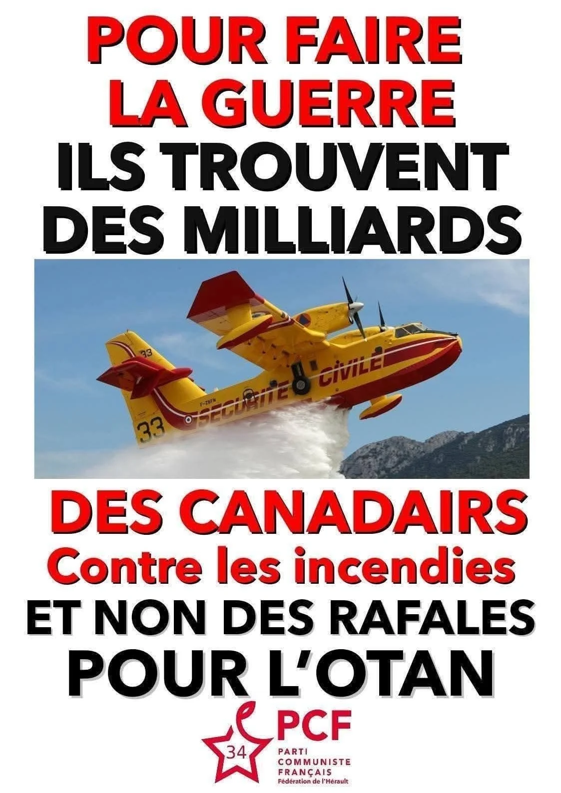

Publication d’archives
Des canadairs, pas des rafales !
Date indiquée par Facebook · 7 août 2025
Texte conservé avec la publication
Contexte du dossier
La formule « Des Canadairs, pas des Rafales », relayée en août 2025, exprime un choix de moyens face aux incendies ; elle ne constitue pas un inventaire du matériel disponible. En février 2026, une légende associée à Bobika dans L’Humanité compare les crédits militaires du budget 2026 à ceux de l’éducation. Ces deux expressions utilisent des formes différentes, slogan et commentaire dessiné, pour rendre un arbitrage visible. Elles posent la question de la sécurité quotidienne : se protéger suppose aussi de former, de soigner et de prévenir les catastrophes.

Sources
Archive rouge · export Facebook · AR-0002-FB-01043
À lire aussi · Sommet de l’OTAN : sortir de la logique de militarisation